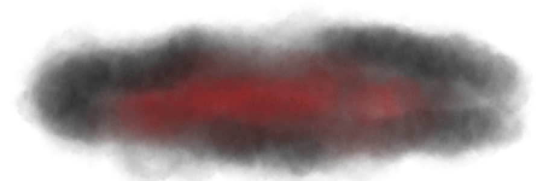

Logs of Lucifer
Log 1: Fifth full moon of the year, year 633. Vanth, my beloved wife, suggests that I document my findings, my experiments, and my thoughts before, during and after my experiments. She states if I do this, it shall be simplier for me to look back and recall what could have went wrong if I were to fail my experiments. Also, it would be such a pleasure for my heir to look through my journals and books for when they comes to age. How I would desire them to contiue the family tradition and continue my work when I am unable to. I know one day my time will come. Age will not take me out, but instead, my citizens... My elder brother or perhaps his wife. His children maybe if he ever decides to plan one. He best hide them from me while the rest in Aurora's womb. I promised my brother I would never lay a hoof upon his wife and I stay true to my vows. Instead, I know that Vanth will have different opinions. She wouldn't rest until she corrupts the Queen's womb. She fears no one, and everyone fears her. Her bloodthirst rivals my own and I couldn’t be more proud of her. She even offered herself as a test subject for when she passes on. Unlike myself, time will take my most beloved, and yes, maybe I will grief over the loss... Maybe. Maybe, I will find a way to preserve her, keep her beside me... But the thought of cutting her open and replacing her insides with all sorts of organs from seperate entities! It thrills me! I cannot express the joy that crosses my mind when I picture her body on the metal table, fur flawless ready to be ruined by her crimson essences. I could hardly wait for that day to come. My brother, Universum, doesn’t yet know of the experiments I have begun many moons ago, but each time I discuss my discoveries with Universum. He pays no mind to them, cares not about my discoveries, and even worse, congratulates me... congratulates me for slaughter. For my inner insanity and desire to mutilate and corrupt the souls of the innocent. Dearest brother, you shouldn’t be proud of my twisted accomplishments. They only make me want to hurt more.

Log 13: A Draconequues, perhaps the most difficult to understand being of the cosmos. With the body of all assorted creatures, their existence is partially why I began my experiments. Namely Subjects 2D-MX and D3-AD. But no matter what I do, no matter how many animals are sacrificed to make my children... I cannot make one!! My test subjects never live past insession and if I manage to connect the nerves and tissue together, they never live past an hour. Even with my magic...The griffons and reptiles... the manticores and dragons... Failures. The brain can stimulate waves up to twelve minutes after death... Decapittion is the quickest way to remove a head and attatch to the body. I always work fast... Not fast enough, this is inefficient! These experiments are not right!
In Process...